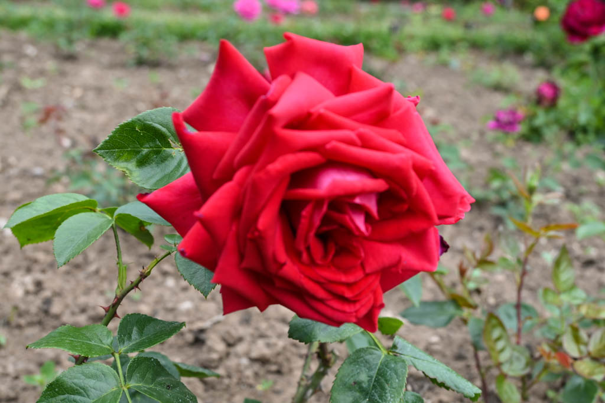
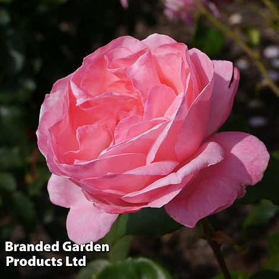
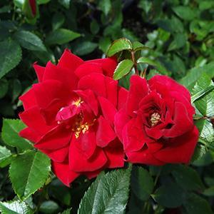
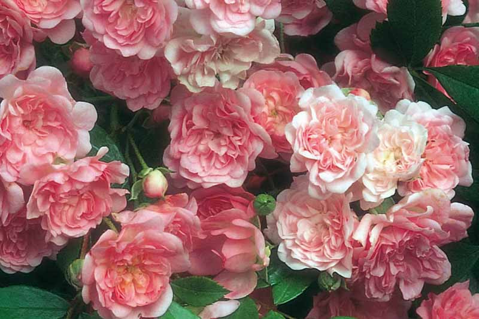
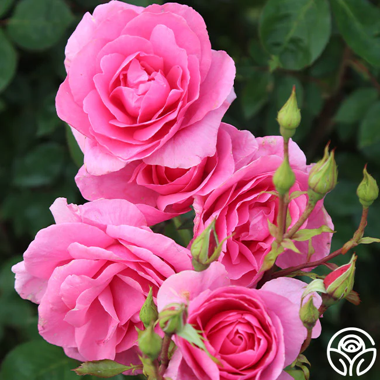

Each year one member will be awarded "Flower Garden of the Valley". The presentation will take place on the final garden party of the 'Six Weeks of Summer' rotation. *Members Only
Climbers
 Hoosier Beauty 9.0
Floribunda

Coral Glo/Gardens 9.0 *Rose of the year 2026*
Grandiflora
 Queen Elizabeth 9.0
Miniatures
 Beauty Secret 9.0
Old Garden Roses

Duchesse de Montebello 9.0
Polyanthans
 The Fairy 8.4
Shrub
 Country Dancer 9.3